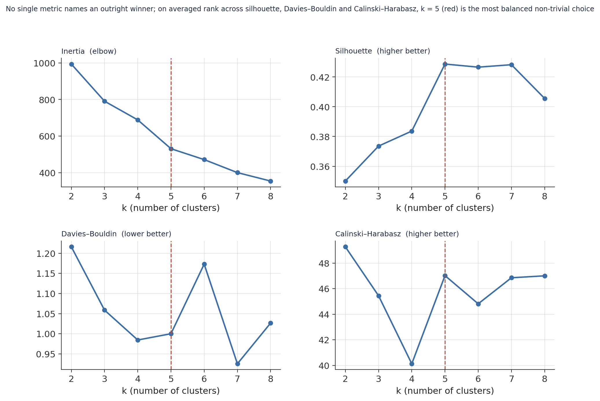
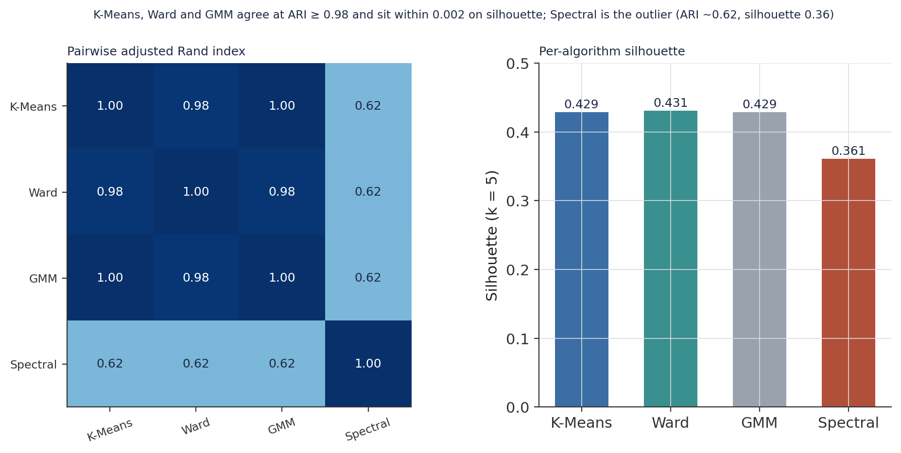
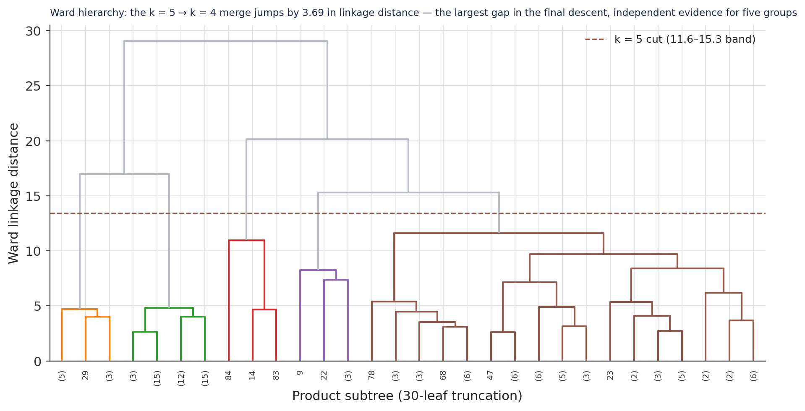
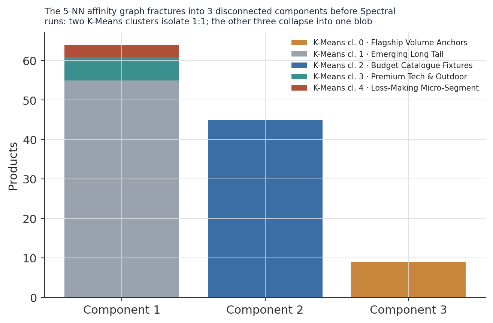
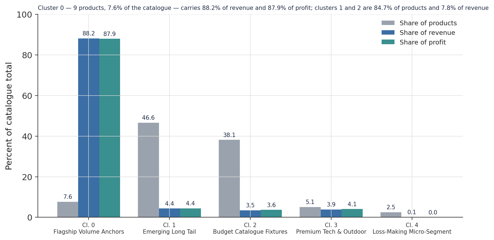
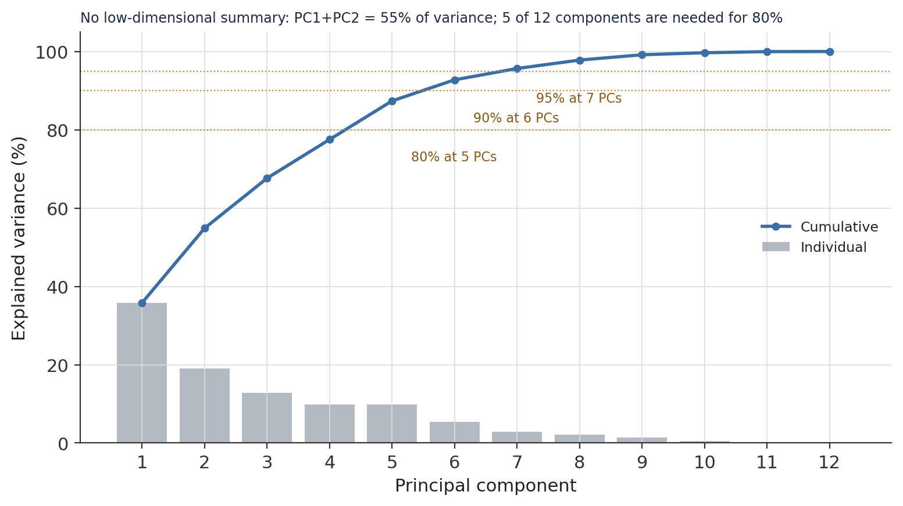
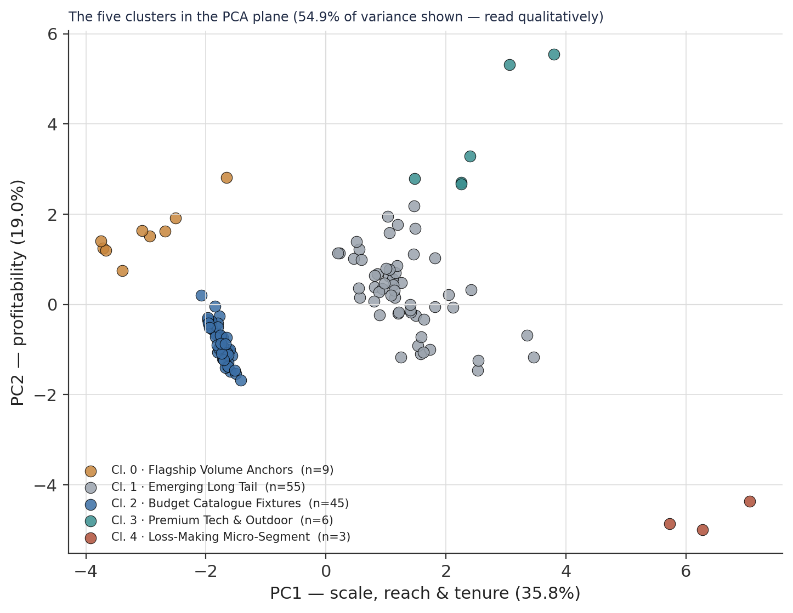
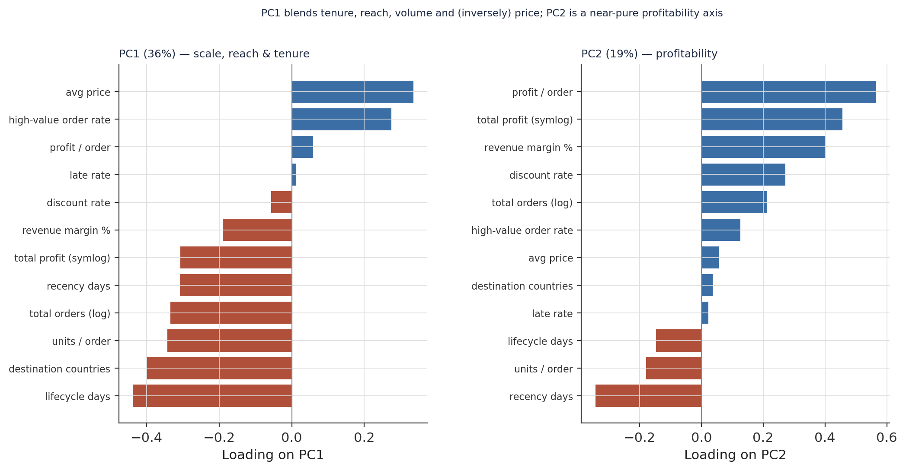

Catalogue Structure to Rationalisation Decisions: A Five-Cluster Segmentation of 118 Products, With a Bounded Loss-Making Micro-Segment
Unsupervised clustering at product grain — nine products carry 88% of revenue, the remaining 109 split into four analytically distinct groups, and a three-product negative-margin cluster is reported with a leave-one-out sensitivity check rather than overstated confidence.
An unsupervised segmentation of a 118-product e-commerce catalogue on 12 volume, price, margin, tenure, and reach features. Small-N discipline: the scaler is chosen by a 200-sample bootstrap (StandardScaler ARI 0.83 vs RobustScaler 0.44, Wilcoxon p < .001), not convention; k = 5 is selected on averaged rank across three geometry metrics and confirmed by the Ward dendrogram’s largest merge gap. Validation: K-Means, Ward, and a Gaussian mixture agree at ARI ≥ 0.98; Spectral clustering is a documented negative result — its k-NN affinity graph fractures into 3 disconnected components at N = 118. The finding: cluster 0 — 9 products, 7.6% of the catalogue — carries 88.2% of revenue and 87.9% of profit; clusters 1 and 2 are 84.7% of products and 7.8% of revenue. The bounded finding: a 3-product loss-making micro-segment (mean margin −3.2%), reported with a leave-one-out sensitivity table because 33 combined orders cannot support a generalised segment rate.
unsupervised learning, K-means clustering, Ward agglomerative clustering, Gaussian mixture model, spectral clustering, silhouette score, adjusted Rand index, bootstrap scaler selection, small sample clustering, revenue concentration, product rationalisation, PCA, leave-one-out sensitivity, Python, scikit-learn
Abstract
This study segments a 118-product e-commerce catalogue by unsupervised clustering, to test whether the catalogue contains structurally distinct product groups and, if so, where its commercial weight sits. The analytical table is the product-grain Gold layer of a companion medallion pipeline; the clustering was fitted once and persisted, and every figure here is rebuilt from those artefacts. Because the sample is small — 118 products against a target of 8–12 features — several methodological choices that would be routine at larger scale are re-established from evidence. The scaler is selected by a 200-sample bootstrap comparison (StandardScaler partition-stability ARI 0.83 vs. RobustScaler 0.44; paired Wilcoxon p < .001), and k = 5 is chosen on averaged rank across silhouette, the Davies–Bouldin index, and the Calinski–Harabasz score, then independently confirmed by the Ward dendrogram, whose largest merge-distance gap in the final descent falls exactly at the k = 5 → k = 4 step. K-Means, Ward, and a Gaussian mixture model produce near-identical partitions (pairwise ARI ≥ .98); spectral clustering diverges (ARI ≈ .62) and is reported as a documented negative result — its k-nearest-neighbour affinity graph fractures into three disconnected components before any clustering objective runs, a property of the sample size, not of non-convex structure the other methods miss. The partition’s principal finding is an extreme, product-count-independent concentration: cluster 0 — 9 products, 7.6% of the catalogue — accounts for 88.2% of revenue and 87.9% of profit, while clusters 1 and 2 together hold 84.7% of products and 7.8% of revenue. The most carefully bounded finding is a three-product loss-making micro-segment (mean revenue margin −3.2%; two elliptical trainers and a golf rangefinder), reported with a leave-one-out sensitivity table because its 33 combined orders cannot support a generalised segment-level rate.
Keywords: unsupervised learning, K-means clustering, bootstrap scaler selection, small-sample clustering, adjusted Rand index, revenue concentration, product rationalisation, PCA
Introduction
A companion study of this product catalogue profiled all 118 items along a price-versus-margin quadrant and established, at the level of individual products, that a small number of “anchor” items carry most of the catalogue’s revenue. This study asks a different question with a different method: does the catalogue partition — do the 118 products fall into a small number of structurally coherent groups when clustered simultaneously on volume, price, margin, tenure, and geographic reach? And if so, what does that partition add over the two-axis quadrant view?
The exercise operates under a constraint the customer-grain segmentation it adapts from did not face: N = 118. At that size the feature-to-observation ratio, the choice of scaler, the number of clusters the data can support, and the reliability of cross-algorithm agreement all have to be established from this dataset’s own evidence rather than inherited by default. The analysis is built around that constraint — every preprocessing and selection decision is backed by a named statistical procedure with a test statistic or a resampling distribution, and the two smallest clusters are profiled at full per-product resolution with an explicit sensitivity analysis rather than summarised by a mean over three points.
Method
Data source
One analytical table, product_features_gold (118 rows × 38 columns), one row per distinct product aggregated over the full transaction history (January 2015 – January 2018). No missing values in any column, no duplicate products, no perfectly identical column pairs.
Feature matrix
All 38 source columns were triaged: 12 enter the feature matrix, 26 are excluded with a stated reason (Table 1). Two columns receive a transform before scaling — total_orders is log1p-compressed (strictly positive, heavily right-skewed), and total_profit is passed through a sign-preserving transform — the sign of the value times log1p of its magnitude — because it carries negative values for the loss-making products and standard log1p is undefined on negatives. The remaining ten features are already on bounded or naturally interpretable scales and are standardised directly. The resulting feature-to-observation ratio is 1:9.8, inside the 8–12-feature target for N = 118. A residual collinearity pass left two pairs above an absolute correlation of 0.85 — total_orders_log ↔︎ n_destination_countries (.87) and lifecycle_days ↔︎ n_destination_countries (.87) — both retained on the judgement that demand volume, geographic reach, and catalogue tenure are distinct business axes that happen to correlate at this scale.
Table 1
Feature-Matrix Triage (38 columns → 12 included, 26 excluded)
| Group | Columns | Disposition |
|---|---|---|
| Volume (transformed) | total_orders (log1p), total_profit (sign-preserving log) |
Included |
| Linear, standardised | avg_price, avg_units_per_order, avg_profit_per_order, revenue_margin_pct, discount_rate, late_rate, lifecycle_days, recency_days, n_destination_countries, high_value_order_rate |
Included |
| Identifiers / text | product_name, product_name_canonical |
Excluded — row keys |
| Categoricals (held for post-hoc) | category_name, department_name, price_tier, demand_bucket, margin_bucket, primary_customer_segment |
Excluded — derived buckets or profiling variables; used post-hoc |
| Near-uniform categoricals | preferred_ship_mode, dominant_delivery_type, preferred_transaction_type |
Excluded — one value ≈ 99% of rows |
| Structurally uniform | avg_shipping_days (CV ≈ 4.3%), avg_scheduled_days (CV ≈ 4.1%) |
Excluded — near-zero discriminating variance |
| Temporal / circular | first_sold, last_sold, peak_order_hour |
Excluded — captured by lifecycle_days / recency_days; hour is circular |
| Collinear (dropped member) | total_units, n_unique_customers, avg_revenue_per_order, total_revenue, total_discount, avg_margin_ratio, n_destination_regions, avg_discount, avg_late_delivery_risk, avg_shipping_delay |
Excluded — correlate above 0.85 with a feature already in the matrix; shadow of it |
Note. Nine pairs exceeded an absolute correlation of 0.85 in the initial audit; the more interpretable or revenue-weighted member of each was kept (e.g. revenue_margin_pct over avg_margin_ratio; late_rate over two continuous delivery-failure measures; avg_price over absolute-discount and per-order-revenue terms).
Preprocessing: selecting the scaler
StandardScaler was chosen, not assumed, on four diagnostics. (a) A D’Agostino–Pearson omnibus test rejects normality for 11 of 12 features at a Bonferroni-corrected α = .00417; late_rate is the sole feature statistically indistinguishable from normal. (b) Decomposing the K-Means objective directly — a feature’s variance share equals its share of the unscaled squared-Euclidean metric — shows lifecycle_days alone would carry 65.9% of the unscaled distance, with avg_price (29.4%) and recency_days (3.8%) bringing the top three to 99.2%; unscaled, the clustering would ignore nine of twelve features. (c) The raw scale ratio between the widest and narrowest feature is ~41,500×. (d) The decisive test: refitting the scaler-and-K-Means pipeline on 200 bootstrap resamples and scoring each against the full-sample partition gives StandardScaler a mean ARI of 0.83 (SD 0.08) against RobustScaler’s 0.44 (SD 0.30); a paired Wilcoxon signed-rank test rejects equality at p < .001. At N = 118, RobustScaler’s median/IQR estimates carry more sampling variability than StandardScaler’s mean/SD estimates, and that instability propagates into the assignments — the theoretically “safer” choice was tested and the evidence rejected it.
k selection
K-Means was fitted for k = 2 through 8 (each model persisted); above k = 8, average cluster membership drops below ~15 products. Three geometry metrics were computed per k and converted to ranks (silhouette and Calinski–Harabasz descending, Davies–Bouldin ascending); the mean rank identifies the most balanced non-trivial k (Figure 1, Table 2).
Algorithm quartet and validation
Four structurally different algorithms were fitted at the locked k — K-Means (centroid), Ward agglomerative (hierarchical, minimum-variance), a full-covariance Gaussian mixture model (probabilistic, soft assignment), and spectral clustering (graph affinity, k-NN with n_neighbors = 5). Partition robustness was measured by pairwise adjusted Rand index; the primary partition was chosen as K-Means. The Ward merge history and, for the disagreeing algorithm, the graph Laplacian’s connected-component structure were examined directly. random_state = 42 throughout.
Software
Python 3.10 with scikit-learn (KMeans, AgglomerativeClustering, GaussianMixture, SpectralClustering, PCA, the clustering metrics), scipy (linkage, normaltest, wilcoxon, connected_components), umap-learn, pandas, numpy, and matplotlib.
Results
k = 5, on averaged rank and a dendrogram gap
No single metric names an outright winner (Figure 1, Table 2). Silhouette peaks across k = 5–7 (0.427–0.431) after climbing from k = 2’s 0.350; Davies–Bouldin is lowest at k = 7 (0.925) but nearly as low at k = 4 (0.985); Calinski–Harabasz is highest at the trivial k = 2 and dips to a trough at k = 4. Averaging the three ranks per k gives k = 5 the best mean rank, 2.00 (first on silhouette, third on Davies–Bouldin, second on Calinski–Harabasz), ahead of k = 7 (2.33) and k = 8 (3.67). k = 7 is not adopted: at N = 118 it drives average cluster size to ~17 products, near the floor below which per-cluster statistics on the smallest splits become unreliable. k = 5 is locked.
Figure 1
k-Selection Sweep: Four Metrics Across k = 2–8

Note. Red line = the selected k = 5. k = 2 wins Calinski–Harabasz alone (small-k bias) and ranks worst overall.
Table 2
Sweep Metrics and Averaged Rank
| k | Silhouette | Davies–Bouldin | Calinski–Harabasz | Mean rank | Note |
|---|---|---|---|---|---|
| 2 | 0.350 | 1.216 | 49.28 | 5.00 | wins CH only — small-k bias |
| 3 | 0.374 | 1.059 | 45.45 | 5.33 | |
| 4 | 0.384 | 0.985 | 40.12 | 4.67 | CH trough |
| 5 | 0.429 | 1.000 | 47.03 | 2.00 | most balanced — locked |
| 6 | 0.427 | 1.173 | 44.82 | 5.00 | |
| 7 | 0.428 | 0.925 | 46.86 | 2.33 | rejected — ~17 products/cluster |
| 8 | 0.406 | 1.027 | 47.01 | 3.67 |
Note. Silhouette, Davies–Bouldin, and Calinski–Harabasz computed on the full 118-product scaled matrix. Rank = mean of the three metric ranks.
Three algorithms agree; spectral clustering is a documented negative result
K-Means, Ward, and the Gaussian mixture produce near-identical partitions (Figure 2): pairwise adjusted Rand indices are K-Means↔︎GMM 1.000 (exactly the same partition), K-Means↔︎Ward 0.981, Ward↔︎GMM 0.981. Silhouettes sit within 0.002 (K-Means 0.429, Ward 0.431, GMM 0.429). The GMM’s soft assignments are effectively hard — all 118 products carry a maximum posterior probability ≥ 0.99 — so there is no genuinely ambiguous product between two clusters. The Ward dendrogram supplies independent, convergent evidence for k = 5 (Figure 3): the merge that collapses five clusters into four costs 3.69 more in linkage distance than the previous merge — the largest gap in the hierarchy’s final descent outside the terminal collapse to a single cluster — so cutting at k = 5 avoids forcing together two groups Ward’s own criterion treats as markedly more distant than anything merged below.
Figure 2
Cross-Algorithm Agreement and Per-Algorithm Silhouette (k = 5)

Note. ARI benchmarks: > .75 excellent, .45–.75 moderate, < .45 fragile.
Figure 3
Ward Dendrogram, Truncated to 30 Subtrees, With the k = 5 Cut

Note. Final-descent merge distances: k = 6→5 at 11.6, k = 5→4 at 15.3 (a 3.69 jump), k = 4→3 at 17.0, k = 2→1 at 29.1.
Spectral clustering diverges, and the reason is mechanical (Figure 4). It agrees with each of the other three algorithms at only ARI ≈ .62. Rebuilding its 5-nearest-neighbour affinity graph and computing the normalised Laplacian shows three eigenvalues at zero — under a standard result, the multiplicity of the zero eigenvalue equals the number of connected components — and a direct connected-components check confirms the graph fractures into exactly three disconnected pieces before any clustering objective runs. Two K-Means clusters (the 9-product and the 45-product groups) each form their own isolated component; the other three clusters (55 + 6 + 3 = 64 products) collapse into a single connected blob that spectral clustering then re-splits on local graph density rather than on the variance structure the other three algorithms agree on. This is a property of k-NN affinity at N = 118 with 12 features, not the discovery of non-convex structure the centroid, hierarchical, and probabilistic methods miss — and raising n_neighbors cannot repair a graph whose sparsity is a property of the sample. Spectral clustering is retained here as a mechanistically explained negative result, not a competing partition.
Figure 4
The Spectral Affinity Graph Fragments Before Clustering

Note. Components from the symmetrised 5-NN connectivity graph on the 12-feature scaled matrix.
The five clusters
The K-Means partition splits the 118 products into groups of sharply different character and size (Figure 5, Table 3): 9, 55, 45, 6, and 3 products. Two clusters hold the bulk of the catalogue by count (100 of 118, 84.7%) while two are genuinely small.
- Cluster 0 — Flagship Volume Anchors (9 products). Mean order count 15,082, roughly 11× the catalogue mean, and mean destination-country reach 148 against a catalogue mean of 45. Mid-price ($148), ordinary margin (11.9%), the longest tenure of any cluster (1,005 days), 100% “Very High” demand, concentrated in the Fan Shop department (44%). No single product category dominates — the nine span about nine categories at one product each.
- Cluster 1 — Emerging Long Tail (55 products). Nearly half the catalogue by count. Mean order count only 159, mean tenure just 99 days (against the 444-day catalogue mean), mid-price ($171), ordinary margin (11.6%). A large population of comparatively new, low-individual-volume products, leaning to the Outdoors department (46%).
- Cluster 2 — Budget Catalogue Fixtures (45 products). The lowest mean price of any cluster ($32), the highest units per order (3.0), the longest mean tenure (837 days) and least-recent activity (287 days since last sale), 87% “Budget” price tier. Long-standing low-ticket staples, not recent additions; Outdoors department (58%).
- Cluster 3 — Premium Tech & Outdoor (6 products). Mean price $641, the highest revenue margin of any substantial cluster (16.2%) and the highest per-order profit ($85), 100% “Luxury” price tier, spanning a Dell laptop, a webcam, a lawn mower, porcelain crafts, a dumbbell set, and a children’s bicycle. The most profitable-per-transaction group.
- Cluster 4 — Loss-Making Micro-Segment (3 products). The highest mean price ($1,200) but the only negative mean revenue margin (−3.2%) and negative per-order profit (−$35), the shortest tenure (1.7 days), 100% “Very Low” demand. Two elliptical trainers and a golf rangefinder; examined at full resolution below.
Figure 5
Standardised Feature Means by Cluster
![A 12-row by 5-column heatmap of cluster mean feature values, z-scored against the catalogue. Cluster 0 is strongly high on total orders (+3.4), total profit (+3.2), destination countries (+2.8), lifecycle days (+1.4). Cluster 2 is high on units per order, lifecycle days, recency days. Cluster 3 is high on avg price (+1.8), profit per order (+2.9), revenue margin (+1.0), discount rate (+1.2), high-value order rate (+2.4). Cluster 4 is extreme high on avg price (+3.9) and high-value order rate (+3.0) but extreme low on profit per order (−2.4) and revenue margin (−3.3).](assets/fig5_cluster_feature_profile.png)
Note. Each cell is the cluster’s mean for that feature, standardised against the full catalogue (red = above catalogue average, blue = below). Original units in Table 3.
Table 3
The Five Product Clusters
| # | Name | Products | % catalogue | Mean orders | Mean price | Mean margin | Mean tenure (days) | Dominant dept. |
|---|---|---|---|---|---|---|---|---|
| 0 | Flagship Volume Anchors | 9 | 7.6 | 15,082 | $148 | 11.9% | 1,005 | Fan Shop (44%) |
| 1 | Emerging Long Tail | 55 | 46.6 | 159 | $171 | 11.6% | 99 | Outdoors (46%) |
| 2 | Budget Catalogue Fixtures | 45 | 38.1 | 294 | $32 | 12.5% | 837 | Outdoors (58%) |
| 3 | Premium Tech & Outdoor | 6 | 5.1 | 340 | $641 | 16.2% | 43 | Technology (33%) |
| 4 | Loss-Making Micro-Segment | 3 | 2.5 | 11 | $1,200 | −3.2% | 2 | — |
Note. Mean margin = mean revenue_margin_pct. Cluster 4’s per-product values are in Table 4.
Revenue architecture: the concentration finding
Cluster identity is almost entirely decoupled from cluster size (Figure 6). Cluster 0 — 9 products, 7.6% of the catalogue — accounts for 88.2% of total revenue, 87.9% of total profit, and 85.0% of all orders. The two largest clusters by product count, clusters 1 and 2, together hold 84.7% of the catalogue (100 of 118 products) but only 7.8% of revenue (4.4% + 3.5%) — a long tail of modest individual contribution. Cluster 3, six products, contributes 3.9% of revenue at the catalogue’s best margin. Cluster 4 is the only group with a negative profit share (−0.04%) on a small positive revenue share (0.13%) — destroying value in aggregate, however small its footprint. This is not a novelty the clustering discovered so much as a precise characterisation of a concentration the catalogue always carried: the analytical value is in identifying exactly which nine products hold the weight, and in resolving the remaining 109 into four distinct groups rather than one undifferentiated tail.
Figure 6
Product Share Versus Revenue and Profit Share by Cluster

Note. Shares of catalogue totals ($33.05M revenue, $3.97M profit).
The loss-making micro-segment, bounded
At n = 3, cluster-level means are unstable descriptors — a single product moves the aggregate materially — so cluster 4 is profiled at full per-product resolution with a leave-one-out sensitivity check (Table 4). All three products carry negative revenue margin (−1.8% to −4.2%): this is a consistent pattern, not a mix that averages negative. But their combined order count is 33 (8 + 10 + 15), so every rate-based statistic is estimated from a genuinely thin base. The leave-one-out table makes the fragility concrete: dropping the Sole E35 trainer shifts the cluster’s mean price by −33%; dropping the Bushnell rangefinder shifts mean price by +25% and mean margin by −15%. The cluster’s aggregate statistics are reported because they describe these three products accurately — they are not extended into a claim about a stable, generalisable “loss-making trainer segment,” because 33 orders cannot support that generalisation.
Table 4
Cluster 4 — Per-Product Values and Leave-One-Out Sensitivity
| Product | Orders | Price | Revenue | Profit | Margin |
|---|---|---|---|---|---|
| Sole E35 elliptical trainer | 15 | $2,000 | $26,410 | −$965 | −3.65% |
| Sole E25 elliptical trainer | 10 | $1,000 | $9,415 | −$170 | −1.80% |
| Bushnell Pro X7 rangefinder | 8 | $600 | $6,063 | −$256 | −4.22% |
| Cluster mean | 11 | $1,200 | — | — | −3.23% |
Note. Leave-one-out mean shifts: excluding Sole E35 → mean price −33.3%; excluding Bushnell → mean price +25.0%, mean margin −15.4%; excluding Sole E25 → mean margin +22.1%.
A grain mismatch with the companion product study
The companion product analysis located a transaction-level negative-margin anomaly concentrated in three categories — Children’s Clothing, Cameras, and Garden. Cluster 4 contains none of those categories (its members are tagged Strength Training, Basketball, and Kids’ Golf Clubs), so the two signals were checked directly. Each of the three anomaly categories resolves to exactly one product in this 118-product catalogue — a children’s heater, a webcam, a lawn mower — and all three carry solidly positive product-grain margin (13.0%, 12.6%, 14.4%), every one above the catalogue mean. Scanning the catalogue for negative product-grain margin independently of category returns exactly the three products in cluster 4, with no near-misses. The transaction-level anomaly and the product-grain loss-making cluster are distinct phenomena: the order-level losses in those three categories are absorbed by a majority of profitable orders for the same product (occasional discounting), whereas cluster 4’s products run unprofitable on average across their own thin history.
Principal-component structure
PCA on the 12 standardised features gives no low-dimensional summary (Figure 7): PC1 captures 35.8%, PC2 19.0% (54.9% in the 2D plane), and five of twelve components are needed for 80% of variance. Read as an interpretive aid rather than a complete picture (Figure 8, Figure 9), PC1 is a combined scale, reach, and tenure axis — lifecycle_days (−0.44), n_destination_countries (−0.40), avg_units_per_order (−0.34), and total_orders_log (−0.34) load together, opposed by avg_price (+0.33) — and PC2 is a near-pure profitability axis: avg_profit_per_order (+0.56), total_profit_log (+0.46), and revenue_margin_pct (+0.40). In the plane, cluster 0 separates cleanly along PC1 (long tenure, broad reach, high volume) and cluster 4 sits far to the opposite end (short tenure, narrow reach, high price), consistent with the feature-mean profiles.
Figure 7
PCA Explained Variance

Note. No small set of components represents this feature space; the 2D projection discards 45% of the information.
Figure 8
The Five Clusters in the PCA Plane

Note. 54.9% of total variance shown — read qualitatively.
Figure 9
PC1 and PC2 Feature Loadings

Note. PC2 loads near zero on order volume and price, making it a comparatively clean profitability dimension.
Discussion
Principal findings
Two findings define the segmentation, and they are deliberately asymmetric in the confidence they carry. The first is an extreme revenue concentration: nine products, 7.6% of the catalogue, hold 88% of its revenue and profit, while 100 products (85% of the catalogue) hold under 8% of revenue. The clustering did not discover this concentration — it was always in the data — but it names the nine products precisely and resolves the long tail into four structurally distinct groups: comparatively new low-volume items (cluster 1), low-ticket long-standing staples (cluster 2), a small high-margin premium group (cluster 3), and a negative-margin micro-segment (cluster 4). The second finding is that micro-segment, and it is reported with matching restraint: three products, all genuinely loss-making, but on a 33-order evidence base too thin to generalise into a segment-level rate — so the leave-one-out sensitivity is presented alongside the aggregate, not buried.
Small-N methodology, made explicit
The value of this exercise is as much in the constraints it worked under as in the partition it produced. Three lessons carry beyond this dataset. Scaler choice is empirical at small N. The bootstrap comparison rejected RobustScaler — the intuitively “safe near outliers” option — because its median/IQR estimates are themselves noisy across resamples of 118 points; the scaler was chosen by a resampling distribution and a paired test, not by convention. Graph-affinity clustering carries a sample-size dependency that centroid methods do not. Spectral clustering’s k-nearest-neighbour graph fractured into three disconnected components before any objective ran; this is a property of the substrate — sparse k-NN affinity at N = 118 with 12 features — and is not repairable by tuning n_neighbors. Any clustering exercise on comparably small, moderately dimensional data should expect the entire graph-affinity family to behave this way. The smallest clusters get profiled, not summarised. With every product a named entity, the two three- and six-member clusters were inspected item by item, with an explicit sensitivity table, rather than reduced to a mean over a handful of points.
What the partition adds
The companion product study framed each product on a two-dimensional price-versus-margin plane. The five-cluster partition does not reproduce those quadrants, and it should not — it operates across 12 dimensions simultaneously. What it produces instead are separations the two-axis view collapses: a volume-and-reach flagship group whose defining feature is order scale, not its position on any price–margin plane; and a luxury-price, negative-margin micro-segment that a quadrant framework would merge with other high-price products. The grain-mismatch check is part of that contribution — it establishes that the transaction-level margin anomaly and the product-grain loss-making cluster are two different things, not one signal at two resolutions.
Limitations
Silhouette is 0.43 — a moderate separation, not a crisp one; the clusters overlap at their boundaries, and clusters 1 and 2 in particular occupy adjacent regions of the PCA plane. N = 118 is small enough that the two micro-clusters’ per-product statistics carry wide uncertainty, which the leave-one-out table quantifies but does not remove. The partition is one analytical lens on the catalogue’s structure, to be read alongside the price–margin view rather than as a replacement for it. A UMAP embedding was computed as a secondary check but is not reported: at this sample size its layout of the smallest clusters is sensitive to the neighbourhood-size hyperparameter, so the deterministic PCA projection is the canonical spatial reference here.
Conclusion
A five-cluster segmentation of the 118-product catalogue, validated across three algorithms and an independent dendrogram gap, isolates the nine products that carry 88% of the catalogue’s commercial weight and resolves the remaining 109 into four analytically distinct groups — a long emerging tail, low-ticket fixtures, a high-margin premium handful, and a three-product loss-making micro-segment reported with explicit sensitivity bounds. The methodological findings — that the scaler must be chosen by resampling at this N, and that graph-affinity clustering breaks down on a sample this size — are portable to any small-catalogue segmentation. The persisted label table is available for downstream rationalisation work.
References
Constante, F., Silva, F., & Pereira, A. (2019). DataCo smart supply chain for big data analysis (Version 5) [Data set]. Mendeley Data. https://doi.org/10.17632/8gx2fvg2k6.5
Caliński, T., & Harabasz, J. (1974). A dendrite method for cluster analysis. Communications in Statistics, 3(1), 1–27. https://doi.org/10.1080/03610927408827101
Davies, D. L., & Bouldin, D. W. (1979). A cluster separation measure. IEEE Transactions on Pattern Analysis and Machine Intelligence, PAMI-1(2), 224–227. https://doi.org/10.1109/TPAMI.1979.4766909
Hubert, L., & Arabie, P. (1985). Comparing partitions. Journal of Classification, 2(1), 193–218. https://doi.org/10.1007/BF01908075
Pedregosa, F., Varoquaux, G., Gramfort, A., Michel, V., Thirion, B., Grisel, O., Blondel, M., Prettenhofer, P., Weiss, R., Dubourg, V., Vanderplas, J., Passos, A., Cournapeau, D., Brucher, M., Perrot, M., & Duchesnay, É. (2011). Scikit-learn: Machine learning in Python. Journal of Machine Learning Research, 12, 2825–2830.
Rousseeuw, P. J. (1987). Silhouettes: A graphical aid to the interpretation and validation of cluster analysis. Journal of Computational and Applied Mathematics, 20, 53–65. https://doi.org/10.1016/0377-0427(87)90125-7
von Luxburg, U. (2007). A tutorial on spectral clustering. Statistics and Computing, 17(4), 395–416. https://doi.org/10.1007/s11222-007-9033-z
Analysis and figures by the author. An unsupervised segmentation of one 118-product catalogue; silhouette is 0.43 and the smallest clusters rest on thin evidence, quantified in the text.